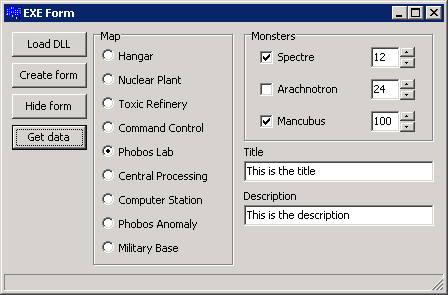

Session #10
Suppose that a visual component doesn't display information exactly the way you want it to? For example, in a tree view control (TTreeView), you can specify the properties of the font (TFont) used for the text. However, this property applies to the entire tree view. You can't specify the font that is used for each individual line in the tree view. Well, this is where the concept of "OwnerDraw" comes in. Basically, it means that the programmer takes control of drawing each item in the control, instead of letting the control do it automatically. This is actually a fairly easy thing to do, depending of course on what you actually want to do.
In addition to changing the font properties (name, size, color, etc.) you can do things like wordwrap the lines in the tree view, or draw bitmaps within the text. Pretty much anything. Again, the more "radical" you want to get, the more work it is. Most of the time you will rarely need to draw things yourself. But, when you do, OwnerDraw is the mechanism.
This application shows how to use the OwnerDraw style to display each line in a list box in a different font and/or color. It also shows how to draw each panel in the status bar in a different way. There isn't a lot of code or a lot of output displayed here, but the OwnerDraw technique is a very powerful concept that can come in handy when you need it. It will distinguish a good UI from a Really Good™ UI.
All items have the same font and color Each item has its own font and color
This technique can be seen in many applications. It's the technique where, if a program is already running and you try to run another instance, instead of a second program running, the existing instance is brought to the foreground. This is made even more popular by applications that allow you to open more than one document at a time (e.g. any text editor other than Notepad.) For example, suppose you're running Notepad++ and you have a few files opened in it. Now, you double-click on another text file in Explorer. What happens (probably) is that instead of running a second instance of Notepad++ and loading the text file into it, the text file is loaded into another tab in the already-running instance of Notepad++. This just doesn't happen automatically. The program had to make this happen. (In the absence of a program preventing a second instance from running, Windows will always start another, completely separate, instance).
There are 3 projects here that demonstrate how to deal with this. The application is a simple text editor that allows you to open multiple text files, each in its own tab. However, each version of the application handles multiple instances differently, from simple (do nothing), to more complex. Although the application is fairly straight-forward, there are a lot of little details that have nothing to do with the mulitple-instance issue. The zip files contain the complete project source for each example but I've only posted an HTML document of the file containing WinMain.
Original executable (MultiEdit.exe)
WinMain file (MultiEdit.cpp) This is pretty much the same as all applications.
Single-instance executable (MultiEditSI.exe)
WinMain file (MultiEditSI.cpp) This has a little additional code to detect running a second instance of the program.
You can easily see how this works by running an instance of the .exe file. Then, drop a text file on the .exe file in Windows explorer. This is the same thing as running it from a command prompt and typing the name of the text file on the command line.
Single-instance executable (MultiEditMM.exe) Forwards the command line to the existing instance using memory mapped files. A memory mapped file in Windows is similar to POSIX shared memory that you may have seen in CS 180. In other words, it's a form of interprocess communication (IPC), as the new instance is communicating with the existing instance by "handing off" the command line to it.
WinMain file (MultiEditMM.cpp) This has more additional code to detect multiple instances and allow for data exchange between them. Uses memory mapped files.
Although the focus of this section was on how to detect multiple instances of an application, there is another interesting aspect at work here. It's that this application is a very good starting point for a full-blown multiple-file text editor. You'll notice that you can open many files at one time, each in their own tab. There's an entire class called TTextEditor that encapsulates most of the work. (Each tab is created and holds an instance of a TTextEditor object). This class has many properties and also has a protected section, as it can be used as a base class for other editors.
Other Uses For Command Line Arguments
Uses in GUI Environments
Have you ever dragged and dropped a file in Windows, Mac, Linux, or any other graphical environment? (Of course you have.) Well, a lot of the functionality of drag and drop is implemented via command line arguments. That's right, command line arguments.
If you drag and drop a file onto an executable (or shortcut) in a graphical environment, you will notice that the executable is launched (run) and it opens the file that was dropped. So, if you drop a file onto Notepad.exe in Windows, Notepad will run and open the file that was dropped. This doesn't happen automatically. It works because the people that programmed Notepad provided a command line interface, which can also be used by GUI environments. (It's actually just another way to communicate with the program.)
If you dropped a file named foo.txt onto Notepad.exe, the GUI environment is really doing something like this:
which is very similar to how you would run Notepad.exe from the command line and pass the name of the file, foo.txt, to the program.Notepad.exe foo.txt
Launching a Program from a Running Program
Most students have learned a simple trick that executing a program from within their C/C++ code can be done using the system function. If your program was running and you wanted to execute Notepad.exe (Windows, of course) from your program and have it edit foo.txt, you would do this:
system("Notepad foo.txt");
It is often a good idea to have your programs support command line arguments, even if you don't think that you or anyone else will ever actually execute the program from a command line. Command line arguments are a very simple way for one process to communicate with another and are supported on all operating systems in pretty much the same way.
Some of you may already know how to create and use a Dynamic Linked Library or DLL, for short. Time permitting, I usually give a brief overview of Windows DLLs in CS 280, as they are a very powerful programming mechanism. In a nutshell, a DLL is a way of sharing code (read: code re-use), without actually integrating the code with the executable. In other words, the libraries are "linked" to the program at run-time instead of the traditional link-time.
There are many benefits of this technique, but one of the most important benefits is that you can share your C++ libraries (or a library in any language for that matter) with a program written in any other language. Got a blazingly-fast way of squaring a 100x100 matrix in C code? Put it in a DLL and you can use it in a C++, C#, D, Delphi, Visual Basic, Java, Python, Ruby, etc., program. Very powerful, indeed!
In this demo, I will show you how to put your UI in a DLL that can then be used in any project you have. This is especially useful if you're working in a language or environment that doesn't provide a productive environment for UI development.
The main UI in the executable The UI from the DLL
After clicking the "Get data" button in the main UI form or clicking the "Callback" button in the DLL form:

The DLL (DLLProject.dll)
The Executable (EXEProject.exe)
Project files (with exe/dll) (Turbo C++) (XE 3) - Both project files to build it yourself (includes .exe and .dll)
Project files (without exe/dll) (Turbo C++ only) - Both project files to build it yourself (without .exe and .dll)
This example program is more on the "lighter-side" of programming. Although, to be honest, I actually used these techniques on a shipping product back in the late 1990's. As it turns out, windows (forms) don't have to be rectangular. They can be any shape. Of course, you have to convey this information to Windows so that the form will be rendered properly.
The examples below contain an image (TImage) of the state of Washington. The first one includes the normal borders and title bar. The second one has no border because the image is the form! You won't see a lot of these kinds of forms in business apps, but for "entertainment-like" apps you might.
The form with a border The form with no border
TODO: Finish this demo!
Exercises